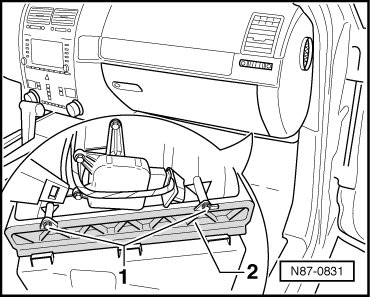
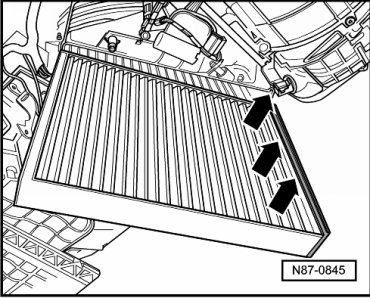

Cabin Air Filter / Purifier: Service and Repair
.Dust and Pollen Filter with Activated Charcoal Filter Insert
Removing
The dust and pollen filter with activated charcoal filter element is located in the passenger footwell.
- Remove footwell trim on front passenger side.
- Remove bolts - 1 -.

- The filter element can be taken out of housing, after removing the cover - 2 -.
• Replacement interval for dust and pollen filter with activated charcoal filter.
Installing
Installation is carried out in the reverse order, when doing this note the following:
- Note filter location, see - arrows -.
